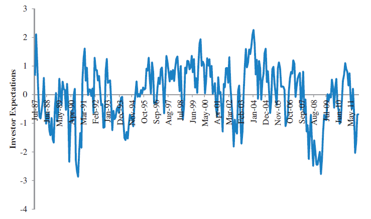

|
January 11, 2021 Belief formation in the stock market In the previous post, we uncovered that the stock market can be predicted to a certain extent. Namely, the price-earnings (P/E) ratio forecasts future stock market returns. When the P/E ratio is high—that is, when stock prices are high relative to companies' earnings—the stock market performs poorly on average over the next business cycle. Conversely, when the P/E ratio is low—when stocks are cheap relative to companies' earnings—the stock market tends to perform well in the medium run. The first interpretation of this pattern is that it is a symptom of inefficient markets. When investors are irrationally optimistic, stocks become over-priced and future returns are predictably low—to the surprise of the optimistic investors. The second interpretation is that, in good economic times risk is low, so investors are willing to hold stocks even if the risk premium is low. In other words, investors understand that investing when the P/E ratio is high delivers lower returns than investing when the P/E ratio is low, and they are fine with this. How to determine which interpretation is correct? Two researchers came up with a simple idea: ask investors! When the P/E ratio is high, ask investors if they expect future returns to be low (which is what rational investors would believe) or high (which is what over-optimistic investors would believe). The researchers retrieved information on investors' beliefs using data from surveys such as the Gallup investor survey and other surveys, some of which have been run since the 1960s. These data contain a trove of information on how market expectations are formed. The figure shows an index of investors' expectations calculated by combining information from several surveys. A first glance at well-known market events suggest that investors are more optimistic when the P/E is high (but remind that high P/E actually forecasts low returns). Investors expected high future returns at the end of 1999 when the P/E ratio was at a historical high (while in fact they were just before the 2000 market crash). Conversely, investors expected low future returns at the end of 2008 when the P/E ratio was very low after the bankruptcy of Lehman Brothers (while in fact they were just before the large 2009 market rebound). This visual inspection of the data is confirmed by statistical analysis. The correlation between investors' expectations of future returns and the P/E ratio is positive and quite large: equal to 0.3. This fact is inconsistent with rational expectations because the correlation between actual future returns and the P/E ratio is large and negative: equal to 0.5. In plain language, when stocks prices are high, investors believe stock prices will continue to go up whereas historical evidence shows that high stock prices forecast low stock returns on average. Such process of belief formation whereby high stock prices fuel investors' expectations of high future returns can lead to bubbles. Now, to play the markets' advocate, the fact that the entire stock market can sometimes be mispriced does not necessarily imply that the market fails to efficiently allocate capital across firms. Indeed, if market-wide mispricing affects all stocks equally, the relative pricing of different companies can remain accurate and investors still allocate capital to the most productive firms. Misallocation of capital arises only if mispricing is firm-specific or sector-specific. Source: This post is based on Greenwood and Shleifer's article Expectations of Returns and Expected Returns, Review of Financial Studies, 2014. |